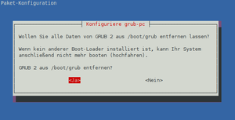
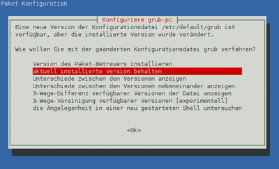
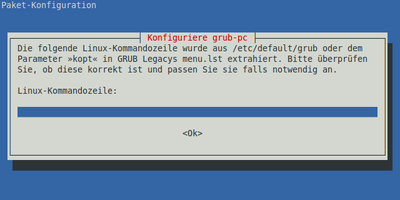
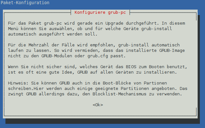
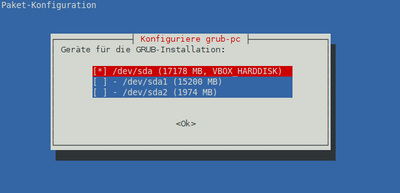
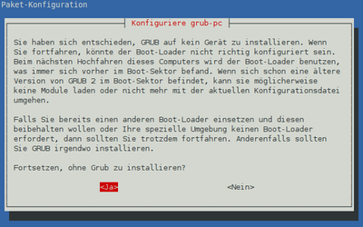

Installation
Experten-Info:
Dieser Artikel basiert auf dem Paket grub-pc für BIOS-Rechner bzw. Installationen im BIOS-Modus. Auf neueren EFI-Systemen wird das Paket grub-efi-amd64 eingesetzt.
Diese Anleitung gilt häufig für beide Modi, etwaige Abweichungen sind an den relevanten Stellen kenntlich gemacht.
Achtung!
Ein falsch konfigurierter Bootloader kann dazu führen, dass das System nicht mehr startet! Dann hilft der Artikel GRUB 2/Reparatur weiter.
Dieser Artikel wurde für die folgenden Ubuntu-Versionen getestet:
Ubuntu 16.04 Xenial Xerus
Ubuntu 14.04 Trusty Tahr
Zum Verständnis dieses Artikels sind folgende Seiten hilfreich:
Dieser Artikel beschreibt, wie man GRUB 2 manuell nachinstalliert. Auch Sonderformen der Installation werden beschrieben, wenn ein normaler Start von Ubuntu nicht mehr möglich ist.
Nach einer Ubuntu-Installation¶
Bei einer Neuinstallation von Ubuntu im BIOS-Modus wird automatisch GRUB 2 in den MBR installiert, im EFI-Modus auf eine gesonderte Partition.
Hinweise zur Neuerstellung / Reparatur von GRUB 2 unter einem EFI Bootmanagement siehe diese Ausführungen.
Möchte man GRUB 2 im Einzelfall in den Bootsektor einer anderen Festplatte installieren, so kann man das während der Installation festlegen. Dabei sollte man aber darauf achten, dass GRUB 2 in den MBR der Platte geschrieben wird, auf der das zu GRUB gehörende Verzeichnis /boot/grub liegt. Andernfalls kann das Erscheinen des Auswahl-Menüs von GRUB relativ lange dauern.
Experten-Info:
Man sollte beachten, dass eine Installation von GRUB 2 nur unter besonderen Bedingungen in einen Partitionsbereich (PBR) möglich ist. Will man den bestehenden MBR nicht antasten, muss ein anderer Bootloader / Bootmanager benutzt werden, um das System zu starten. Dann sind entsprechende Zusätzliche Maßnahmen zu ergreifen.
Wurde GRUB 2 während der Installation in den falschen MBR oder Bootsektor installiert, so kann man dies leicht im Nachhinein ändern.
Achtung!
GRUB 2 legt bei der Installation keine Sicherungen vom MBR, dem Bereich dahinter und den Bootsektoren an. Hat man einen Rechner mit Sonder-Partitionen wie einer Wiederherstellungs-Partition, die über eine Funktionstaste aufgerufen wird, und soll diese Funktion erhalten bleiben, so muss man unbedingt ein Backup vom MBR und dem verborgenen Bereich dahinter anlegen. Dies kann man mittels dd erledigen.
Sonderformen der Installation¶
Da sich GRUB 2.0 noch in der Entwicklung befindet, kann es bei vereinzelten Systemen zu Startproblemen kommen. Die Pakete für Grub 1.9 werden nicht mehr fortgeschrieben.
Hinweis:
 Bei den folgenden Beschreibungen bzw. der Aufzählung von Paketen, die entfernt oder installiert werden sollen, ist bei Grub 1.9 das Paket
Bei den folgenden Beschreibungen bzw. der Aufzählung von Paketen, die entfernt oder installiert werden sollen, ist bei Grub 1.9 das Paket
grub-gfxpayload-lists
in die Überlegungen / Aktionen mit einzubeziehen. Dieses ist in den folgenden Befehlen mit
# grub-gfxpayload-lists
gekennzeichnet - man muss beim Kopieren der Befehle nur das Rautezeichen # entfernen.
Zusätzliche Maßnahmen¶
Um einen GRUB 2 nicht in den MBR, sondern an eine andere Stelle zu platzieren, muss das Dateisystem entsprechend vorbereitet sein. Dies ist regelmäßig der Fall, wenn der MBR bereits durch ein anderes Betriebssystem belegt ist und man diesen Zustand nicht verändern kann (Dualboot mit Windows).
Dann bleibt als einzige Alternative, eine erweiterte Partition zu benutzen. Hier muss als erste Partition dev/sda5 angelegt und darauf geachtet werden, dass bei dieser Partition ein entsprechender Freiraum geschaffen wird (die neueren Werkzeuge für eine Partitionierung berücksichtigen das automatisch). Nur in diesen Freiraum kann man im Terminal [1] mit:
sudo grub-install --force /dev/sdb5
einen funktionsbereiten Bootloader mit seinen Imagedateien einbringen. Dieser kann aber nicht selber booten, sondern muss vom vorhergehenden Bootloader auf dem MBR aufgerufen werden. Als Ergebnis einer Abfrage mittels des Skriptes GRUB-Umgebung analysieren ergibt sich diese (beispielhafte) Ausgabe:
/dev/sdb: Kein GRUB 00 /dev/sdb1: Kein GRUB 00 /dev/sdb2: Kein GRUB 00 /dev/sdb5: GRUB 2 v1.99
Neuinstallation im laufenden System¶
Kann man noch ins System gelangen, so bieten sich die folgenden Vorgehensweisen an:
Gleiche Paketversion¶
| Zunächst sollte man versuchen, mit der gleichen GRUB-Version diesen innerhalb eines laufenden Systems zu reparieren. Als erstes werden in einem Terminal [2] die aktuell installierten Pakete entfernt: |  |
sudo apt-get purge grub-* os-prober # grub-gfxpayload-lists | |
| Es erscheint einen Abfragemaske, hier steuert man mit den Pfeil-Tasten ← , → vorzugsweise auf "Ja" und bestätigt dies dann durch Drücken der Eingabe-Taste ⏎ . | |
Bei einem "Nein" verbleiben viele systemeigene Einstellungsdateien auf dem Rechner, die dann bei einer erneuten Installation zu Fehlern führen können. Nun bereitet man für den BIOS-Modus die Reinstallation in einem Terminal [2] vor:
sudo apt-get update sudo apt-get install grub-pc os-prober # grub-gfxpayload-lists
Für den EFI-Modus gelten die folgenden Befehle:
sudo apt-get update sudo apt-get install grub-efi-amd64-signed os-prober # Alternativ: grub-efi-amd64, oder bei 32-Bit-EFI: grub-efi-ia32
Externe Pakete verwenden¶
Bringt das oben Beschriebene keine Abhilfe oder hat man keine Verbindung mit dem Internet, so kann man versuchen, GRUB 2 mit extern heruntergeladenen Paketen zu reparieren. Dazu sind die folgenden Schritte auszuführen. Es werden im BIOS-Modus die folgenden Pakete für die GRUB 2 Installation benötigt:
os-prober (Optional, nur notwendig, falls auch andere Betriebssysteme auf dem System installiert sind)
Man lädt sich die GRUB-2-Pakete aus den Ubuntu-Archiven herunter, indem man die obigen Links auf einem anderen Rechner nacheinander aufruft. Die Links führen jeweils auf eine Übersichtsseite mit den diversen Ubuntu-Versionen. Nach der Auswahl einer Version für das Paket wird man auf eine weitere Übersichtsseite geleitet, an deren Ende sich der Bereich zum Herunterladen der Pakete befindet.
Hier wählt man aus, ob man auf einem 64-Bit-System (amd64) oder auf einem 32-Bit-System (i386) installieren möchte. Durch einen Klick auf die betreffende Architektur gelangt man dann auf die Serverliste. Dort kann man durch Anklicken eines Servers dann das gewünschte Paket (in das browserintern eingestellte Downloadverzeichnis) herunter laden und zum Übertragen z.B. auf einen USB-Stick speichern.
Pakete installieren¶
Nach dem Herunterladen werden die alten Paket erst einmal mit
sudo apt-get purge grub-* os-prober # grub-gfxpayload-lists
entfernt. Zu der eingeblendeten Abfrage siehe auch die Hinweise unter gleiche Paketversion. Danach installiert man die heruntergeladenen Pakete im Terminal [2]:
sudo dpkg --install /Pfad_Downloadverzeichnis/*.deb
Mittels Live-CD GRUB_2 aktualisieren¶
Man muss mit Hilfe einer Desktop-CD einen "Live-Desktop" starten und dann in eine chroot-Umgebung wechseln[4].
Man installiert die für die betreffende Ubuntu-Version aktuellen GRUB-Pakete im Terminal [2] mit:
apt-get update apt-get --reinstall install grub-common grub-pc os-prober # grub-gfxpayload-lists grub-setup /dev/sdX
Der letzte Befehl sollte eigentlich schon innerhalb des vorhergehenden Befehls ablaufen, aber um sicher zu gehen, dass die aktuellen GRUB-Images in MBR und verborgenen Bereich geschrieben werden, einfach sicherheitshalber noch mal ausführen. Auch hier ist /dev/sdX an das eigene System anzupassen.
Abschließend muss man die chroot-Umgebung wieder verlassen.
Mittels Live-CD auf eine Version einer neueren Distribution aktualisieren¶
Achtung!
Bei dieser Art der GRUB-2-Installation wird GRUB 2 bei künftigen Durchläufen durch die Aktualisierungsverwaltung nicht mehr automatisch aktualisiert. Dies muss dann bei Bedarf manuell durchgeführt werden. Daher sollte diese Methode immer nur als allerletzte Lösung in Betracht gezogen werden.
Auch wenn die GRUB-2-Pakete im Prinzip autark sind, ist bei diesem Vorgehen generell darauf zu achten, dass das System, auf der neuere GRUB-2-Pakete installiert werden sollen, auch die Paketabhängigkeiten erfüllt.
Vorbereitungen¶
Man öffnet am Live-Desktop einen Browser und ruft dieses Wiki auf, indem man die Adresse (URL)
in die entsprechende Adresszeile eingibt oder indem man mit der  das Kontextmenü aufruft und "Link-Adresse" kopieren wählt. Die weiteren Schritte zur Paketauswahl und Download sind, wie oben unter Pakete auswählen beschrieben, auszuführen.
das Kontextmenü aufruft und "Link-Adresse" kopieren wählt. Die weiteren Schritte zur Paketauswahl und Download sind, wie oben unter Pakete auswählen beschrieben, auszuführen.
Nach dem Herunterladen der Pakete in das browserintern eingestellte Downloadverzeichnis, in der Regel
/home/BENUTZERNAME/Downloads
bindet man das System, auf dem GRUB 2 ausgetauscht werden soll, in das Livesystem ein. Dazu wird die Root-Partition gemountet. Man informiert sich unter /media/ nach dem System_Name des eingebundenen Systems. Danach kopiert man die heruntergeladenen GRUB-2-Pakete im Terminal [2] mit
sudo rm -f /media/System_Name/tmp/*.deb sudo cp -f /home/ubuntu/Downloads/*.deb /media/System_Name/tmp/
Deinstallieren¶
Zunächst muss man mittels Desktop-CD in eine chroot-Umgebung wechseln[4].
| In der chroot-Umgebung führt man nun den folgenden Befehl aus, um eine bestehende GRUB 2 Installation durch Eingabe im Terminal [2] von | |
sudo apt-get purge grub-* os-prober # grub-gfxpayload-lists | |
| zu deinstallieren. Während der Deinstallation kommt eine Abfrage, ob man alle Dateien von GRUB 2 entfernen möchte: | |
| Hier steuert man mit den Pfeil-Tasten ← , → vorzugsweise auf "Ja" und bestätigt dies dann durch Drücken der Eingabe-Taste ⏎ . | |
Bei einem "Nein" verbleiben viele systemeigene Einstellungsdateien auf dem Rechner, die dann bei einer erneuten Installation zu Fehlern führen können.
Installieren¶
Man wechselt im Terminal [2] in das Verzeichnis, in das man die Pakete kopiert hat:
cd /tmp
und installiert die heruntergeladenen Pakete im Terminal [2] mit:
dpkg --install *.deb
Während das Paket grub-pc installiert wird, kommen einige Abfragemasken zur Konfiguration von Grub 2.
|  | Wurde beim Deinstallieren die Abfrage mit "Nein" beantwortet, so wird z.B. erkannt, dass noch die Datei /etc/default/grub vorhanden ist und man kann die Abfrage mit der Eingabe-Taste ⏎ abschließen, wenn man die Einstellungen behalten will. |
| Anderenfalls kann man mit den Pfeiltasten ↓ , ↑ eine andere Vorgabe auswählen und schließt die Abfrage mit der Eingabe-Taste ⏎ ab. | |
|  | Die Kernelparameter "quiet splash" werden immer als Standardwert gesetzt. Diese Abfrage kann man in der Regel durch Drücken der Eingabe-Taste ⏎ abschließen. |
| Kennt man bereits erforderliche Kernelparameter, so kann man diese gleich hier einbringen. Nachdem man diese in die Eingabezeile eingetragen hat, schließt man den Vorgang durch Drücken der Eingabe-Taste ⏎ ab. | |
|  | Dieser Hinweistext bezieht sich auf die nächste Maske und man sollte den Text sorgfältig durchlesen. Danach wechselt man durch Drücken der Eingabe-Taste ⏎ in die Eingabemaske für den MBR. |
|  | Man kann in diesem Konfigurationsbildschirm wählen, ob GRUB 2 in den MBR einer Festplatte oder PBR einer Partition installiert werden soll. Hier ist wichtig, dass man zunächst mit den Pfeiltasten ↓ , ↑ auf den gewünschten Eintrag steuert. Dieser Eintrag muss dann durch Drücken der Leertaste ausgewählt werden, was durch ein "[*]" angezeigt wird. Ein erneutes Drücken der Leertaste hebt die Auswahl wieder auf. Abschließend bestätigt man diese Auswahl durch Drücken der Eingabe-Taste ⏎ . |
| Im vorliegenden Beispiel wird GRUB 2 in den MBR der Festplatte installiert. | |
Hinweis:Handelt es sich um einen RAID-Verbund, so kann man durch gleichzeitiges Setzen eines "[*]" in allen beteiligten Datenträgern einen MBR installieren. Damit ist auch bei einem Ausfall eines Datenträgers das direkte Booten über das BIOS durch entsprechende Auswahl möglich. | |
|  | Wurde in der vorherigen Maske bewusst oder unbewusst keine Auswahl getroffen, so erfolgt hier eine Kontrollabfrage. |
| Man steuert mit der Pfeiltaste ← auf "Ja", um keinen MBR zu installieren. Damit werden auch intern nur eingeschränkt Dateien (u.a. im Verzeichnis /boot/grub) angelegt. Man bestätigt diese Auswahl durch Drücken der Eingabe-Taste ⏎ . | |
| Man steuert mit der Pfeiltaste → auf "Nein", um die Auswahl zum Setzen eines MBR zu wiederholen und bestätigt diese Auswahl durch Drücken der Eingabe-Taste ⏎ . | |
Man erstellt die GRUB 2 Konfigurations-Datei /boot/grub/grub.cfg im Terminal [2] neu mit:
update-grub
Man sollte nun die Datei /boot/grub/grub.cfg in einem Editor [3] auf Plausibilität überprüfen, bevor man abschließend die chroot-Umgebung wieder verlässt.
grub2 auf andere Partition/Festplatte installieren¶
Die korrekte Methode, um GRUB 2 auf eine andere Partition/Festplatte zu installieren, ist:
sudo dpkg-reconfigure grub-pc
wobei der Setup-Dialog dann nach der gewünschten Zielpartition fragt.
Achtung!
Die nachfolgende Lösung ist nur vorübergehend, da sich der Ubuntu Paketmanager den originalen Installationsort merkt. Spätestens beim nächsten GRUB 2 oder Distributionsupdate wird GRUB 2 wieder die auf die originale Partition installiert. Dies kann zu einen nicht mehr bootbaren System führen.
Ist grub z.B. auf /dev/sda3 installiert und man möchte es nun aber auf lieber auf /dev/sda haben sind folgende Befehle notwendig:
sudo grub-setup /dev/sda sudo grub-install /dev/sda sudo update-grub
wobei /dev/sda an das neue gewünschte Ziel angepasst werden muss.
 Übersichtsseite
Übersichtsseite- Erstellt mit Inyoka
-
 2004 – 2017 ubuntuusers.de • Einige Rechte vorbehalten
2004 – 2017 ubuntuusers.de • Einige Rechte vorbehalten
Lizenz • Kontakt • Datenschutz • Impressum • Serverstatus -
Serverhousing gespendet von